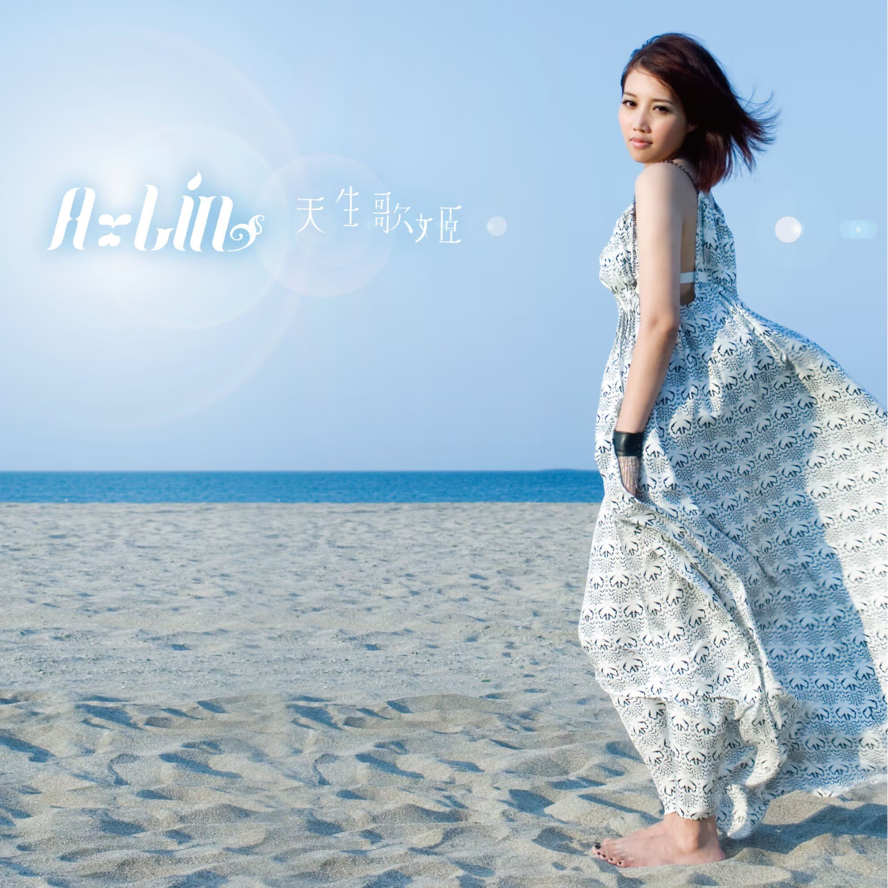
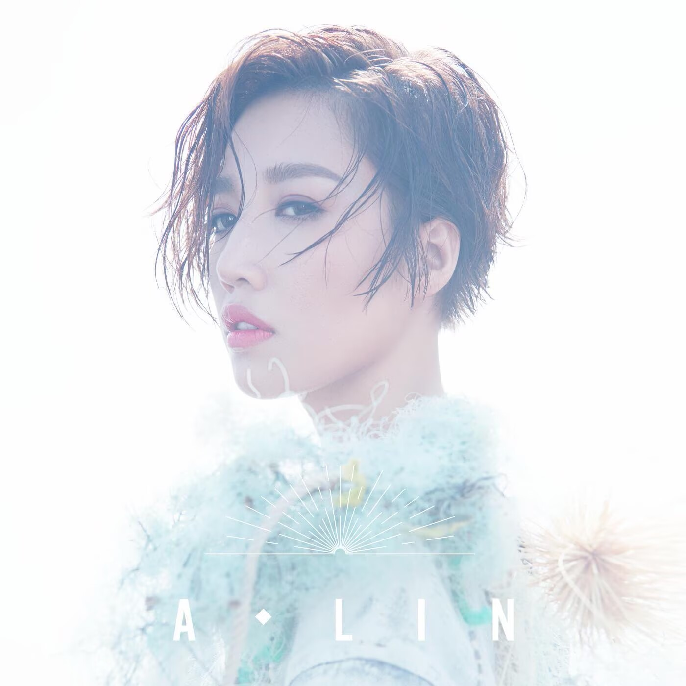
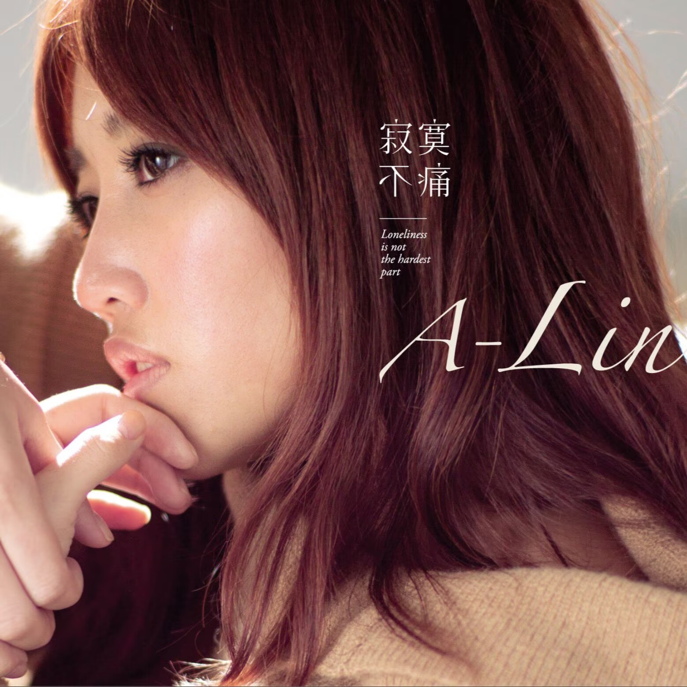
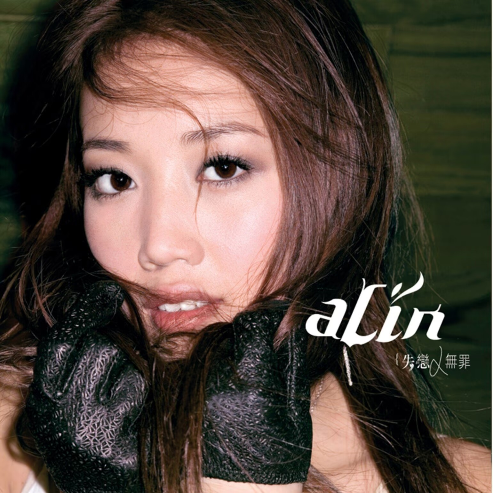

☰
首页
关于 A-Lin
最新讯息
音乐作品
现场与影音
Selected Works
一首歌，
一段被保存的情绪。
Discography
音乐作品
从第一句歌词开始，重新遇见 A-Lin。

失恋无罪
ALBUM 01 · LISTEN ↗

寂寞不痛
ALBUM 02 · LISTEN ↗

给我一个理由忘记
ALBUM 03 · LISTEN ↗

罪恶感
ALBUM 04 · LISTEN ↗
旅途中的歌
ALBUM 05 · LISTEN ↗
温柔的重量
ALBUM 06 · LISTEN ↗
心的方向
ALBUM 07 · LISTEN ↗
爱与勇气
ALBUM 08 · LISTEN ↗
慢慢喜欢你
ALBUM 09 · LISTEN ↗
未完待续
ALBUM 10 · LISTEN ↗